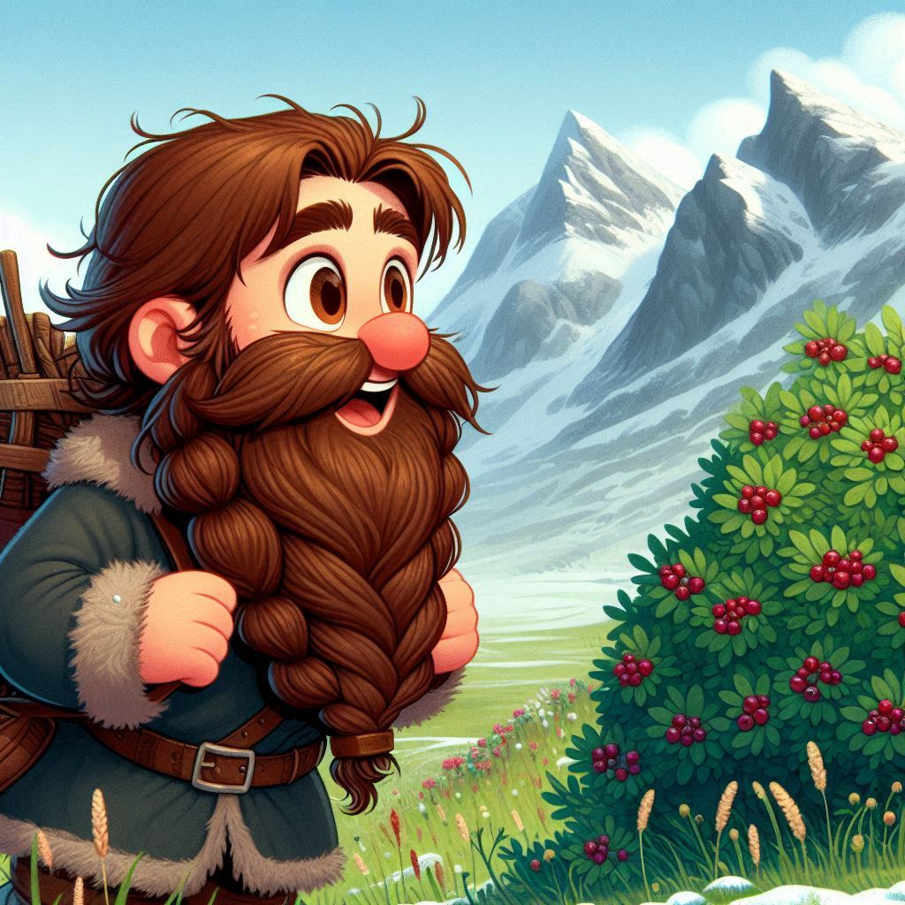

At the edge of the Mountains of Melody, Jimli stumbles forward, each
step heavier than the last. The climb had been brutal, and the
Shrine of Wisdom had drained both his patience and his stomach.
Now,
with nothing left but the growls of his belly to keep him company,
he trudges on, desperate for a morsel of food.
"Blasted elves and their riddles," Jimli mutters. "All that thinking
and no time for eating. I swear if I see another stone tablet,
I'll…" He pauses mid-grumble as something catches his eye.
There, just off the path —berries! Real, juicy berries! "By my
beard, am I dreaming, or has my luck finally turned?" He squints,
rubs his eyes, and to his astonishment, the berries don't disappear.
Driven by hunger, Jimli lunges forward, snatching one up and popping
it into his mouth. The sweet taste brings him back to life, but it
only makes him hungrier. More!" he demands, eyes darting around.
"There must be more!"
He spots another cluster of berries
a bit farther off and dashes towards them, fueled by a newfound
energy.
But there's a hitch: while arriving at the Dancing Elves' Festival
on an empty stomach is out of the question, Jimli can't afford to
dawdle either. The 'Mix and Match' contest kicks off on the first
day, and if he's late, he'll miss his chance to show those elves how
a dwarf really moves!
"Right," he mutters with
determination. "Time to eat like a proper dwarf. No berry is safe
from me!"